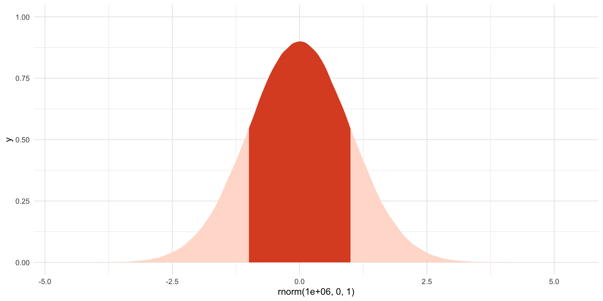
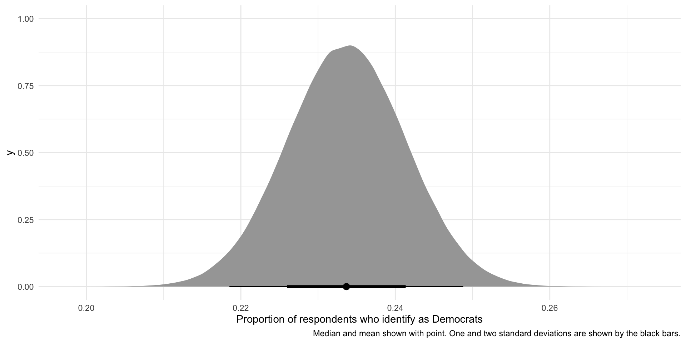

install.packages(c("tidyverse", "janitor", "ggdist", "MetBrewer"))Probability
Set up
To complete this session, you need to load in the following R packages:
Install packages
To install new R packages, run the following (excluding the packages you have already installed):
This session, we are going to be working with randomness. If you would like to work with the same randomness I am working with, you can set your seed to the same as mine by running the following line of code:
set.seed(1234)
Note
The numbers produced when you set your seed are still random. They are; however, the same random numbers each time you run your code. This makes your code reproducible. For a great explanation of what setting your seed means and how R deals with randomness, I recommend this blog post.
Introduction
Thus far, we have focused on identifying patterns and relationships within our data. We have learnt how to look through the noise to identify how our variables change with one another. As our independent variables change, does our dependent variable increase, decrease, or stay the same? When paired with causal theory, we are armed with tools to help us make sense of the complex world of politics and social behavior more broadly.
We have not, however, yet discussed what that noise all means for our confidence in the patterns and relationships we have uncovered. These final two sessions will focus on the question of uncertainty. How confident can we be that the relationships we uncover in our data are real, and not just the product of random noise?
To answer this question of uncertainty, you need a quick refresher or introduction to probability theory. This topic tends to be soaked in abstraction: Greek letters tend to abound. This method has never worked for me: I like to see what is going on under the hood. As such, I will introduce you to these concepts using simulations and illustrations. I will include the Greek letters so you can read the dusty old textbooks that tend to accompany more advanced statistics courses. But please keep in mind that probability can be more straightforward than the statisticians would have you believe!
Let’s get started!
First, some philosophy…
There are two approaches to interpreting probability: frequentism and Bayesianism. The dominant approach in social science is frequentism, so that’s what we will focus on. However, it is useful to understand where both come from.
Frequentists argue that probabilities are the proportion of times an event occurs over an infinite number of identical trials. To illustrate, consider the probability of getting heads when you flip a coin. Frequentists would argue that it is the number of times you get a head after flipping a coin an infinite number of times divided by the number of trials you ran (infinity).
Hmm… we cannot flip a coin an infinite number of times and you cannot divide something by infinity. Frequentists, therefore, need to make do with approximating probabilities. They do this by replacing the infinite number of trials with a very large number of trials. For example, they find that if you flip a coin one million times you tend to get heads half a million times. Therefore, the probability of getting heads when you flip a coin is 0.5 (or 50%).
Bayesians have a different approach. They believe probabilities represent your subjective beliefs, which are informed by your knowledge and experience of the event. These subjective beliefs are constantly being updated based on new information you receive. For example, a Bayesian may start with the belief that the probability of getting heads is 0.8 (or 80%). They believe that if you flip a coin 100 times, you will get 80 heads. You then go ahead and flip that coin 100 times and instead you get 50 heads. The Bayesian will then update their belief about the probability of flipping the coin. They will not discard their prior belief; instead they will move their belief closer to what they observed. They may split the difference and update their belief to a probability of 0.65. Every time you run your trial (flipping the coin 100 times and reporting the number of heads) they will update their beliefs based on this new information and their prior.
Each approach has its critics. You, of course, cannot flip a coin an infinite number of times, so frequentists have defined their way out of ever having precise probabilities. Critics of Bayesianism argue that subjective beliefs should not influence empirical analysis. We will focus on frequentism moving forward, but if you are interesting in learning more about the Bayesian approach I recommend this fantastic introductory book (in R): Bayes Rules! An Introduction to Applied Bayesian Modeling by Alicia A. Johnson, Miles Q. Ott, Mine Dogucu.
Axioms of probability
Probability theory rests on three basic rules. First, the probability of any event, A, is non-negative. Formally:
\[ P(A) \ge 0 \]
For example, the probability of getting a head cannot be negative. It must be zero or positive.
Second, the probability of all possible events (the sample space, or \(\Omega\)) is equal to one. Formally:
\[ P(\Omega) = 1 \]
For example, all possible events that could result from a coin flip are heads or tails. Therefore, the probability that you will get a head or a tail is equal to one.
Third, if events cannot occur at the same time (they are mutually exclusive), then the probability that each occurs is equal to the sum of the probabilities that each individually occurs. Formally:
\[ P(A\ or\ B) = P(A) + P(B) \]
For example, you cannot flip a coin and get both heads and tails. Therefore, these outcomes are mutually exclusive. The probability of getting heads or tails when flipping a fair coin is:
\[ P(H\ or\ T) = P(H) + P(T) = 0.5 + 0.5 = 1 \]
From these three basic rules, we can derive all of probability theory! Put together, they imply that probabilities range from zero to one and that the probability of all possible outcomes from some trial must add up to one.
Probability distributions
We are interested in learning how likely an outcome is to occur. We can assign outcomes a random variable, which is simply a numeric representation of that event. For example, I might define a coin landing on heads a random variable of 1. I can also define a coin not landing on heads a random variable of 0.
Each random variable has a probability distribution. This defines the likelihood that each outcome will occur. I will focus on two such distributions: the Bernoulli and the Normal distribution.
Bernoulli distribution
The Bernoulli distribution is the probability distribution of a binary variable. For example, here is the Bernoulli distribution of a fair coin toss:
tibble(x = rbinom(1e6, 1, 0.5)) |>
count(x) |>
mutate(x = if_else(x == 1, "HEAD", "TAIL"),
prop = n / sum(n)) |>
ggplot(aes(x = x, y = prop)) +
geom_col() +
labs(x = "Event",
y = "Probability") +
theme_minimal()Here is the Bernoulli distribution of a coin that lands on tails 75 percent of the time:
tibble(x = rbinom(1e6, 1, 0.25)) |>
count(x) |>
mutate(x = if_else(x == 1, "HEAD", "TAIL"),
prop = n / sum(n)) |>
ggplot(aes(x = x, y = prop)) +
geom_col() +
labs(x = "Event",
y = "Probability") +
theme_minimal()How do you find an event’s Bernoulli distribution? Recall that frequentists conduct a large number of trials and tally up the number of each outcome that occurs across those trials. The probability of each outcome is just that count of occurances divided by the total number of trials they ran.
To demonstrate, I am going to create a coin in R. I am not going to tell you whether this coin is fair.
Hidden in that code block is my coin (you can take a look at it at the end of this section). To flip the coin, we simply run the following code:
flip_coin(1)[1] "HEADS"flip_coin(1)[1] "HEADS"flip_coin(1)[1] "HEADS"So, your task is to find the Bernoulli distribution of this coin. In other words, how likely are you to flip heads and how likely are you to flip tails?
Note
Because the probability of all possible outcomes needs to add up to one (see axiom number two) and we only have two possible outcomes, you can choose one outcome (heads or tails), record the number of times that outcome occurs, and divide it by the number of trials you run (coin flips). You can then subtract that probability from one to get the probability of the other outcome.
We are going to flip our coin one million times (thankfully R can do this very quickly). Each time we flip the coin, we will record its outcome (heads or tails). At the end, we will have conducted our very large number of trials and should have a good frequentist approximation of the true Bernoulli distribution of our coin.
results <- tibble(trial = 1:1e6,
outcome = flip_coin(1e6))
results# A tibble: 1,000,000 × 2
trial outcome
<int> <chr>
1 1 HEADS
2 2 HEADS
3 3 TAILS
4 4 HEADS
5 5 HEADS
6 6 HEADS
7 7 HEADS
8 8 HEADS
9 9 HEADS
10 10 TAILS
# ℹ 999,990 more rowsOkay, so we now have the results of our one million trials. Let’s tally them up:
approx_dist <- tabyl(results, outcome)
approx_dist outcome n percent
HEADS 799748 0.799748
TAILS 200252 0.200252In our one million trials, we got heads 799,748 times (or 80% of the time). We got tails 200,252 times (or 20% of the time). Let’s visualize this:
ggplot(approx_dist, aes(x = outcome, y = percent)) +
geom_col() +
labs(x = "Event",
y = "Probability") +
theme_minimal()So, do you think the coin is fair? No! It’s stacked towards heads. Let’s look at the true Bernoulli distribution of this coin:
flip_coinfunction (n)
{
if_else(rbinom(n = n, size = 1, prob = 0.8) == 1, "HEADS",
"TAILS")
}
<bytecode: 0x129e646c0>Focus on the rbinom(n, size = 1, prob = 0.8) part of the function. The third argument (prob) is the probability that rbinom() will return a one (the random variable I have assigned to heads). I set it to 0.8 (or 80%). So, our large number of trials approximated - with a good amount of precision - the Bernoulli distribution of this coin.
Normal distribution
The Normal distribution is another common distribution that is critical to regression and modelling more broadly. We will discuss that connection in the next session.
The Normal distribution is symmetric, bell-shaped. Here it is visually:
ggplot() +
geom_density(aes(x = rnorm(1e6, mean = 0, sd = 1))) +
theme_minimal() +
labs(x = NULL)The shape of this bell-curve relies on two things: first, the mean (\(\mu\)) and second, the variance (\(\sigma^2\)). The mean determines the center of the distribution. In the plot above, the Normal distribution is centered at its mean of zero.
The variance determines how spread out away from that mean the distribution is. The plot above has a standard deviation (which is the square root of the variance (I know… I also don’t know why they just stick with standard deviation…)) of one. Let’s compare this to a Normal distribution with the same mean but with a standard deviation of two:
ggplot() +
geom_density(aes(x = rnorm(1e6, mean = 0, sd = 1)), colour = "red") +
geom_density(aes(x = rnorm(1e6, mean = 0, sd = 2)), colour = "blue") +
theme_minimal() +
labs(x = NULL)
The Normal distribution with a larger variance (in blue) is more spread out around the center. It is also much shorter than the Normal distribution with the smaller variance. It might be helpful to think of a bucket containing a gallon of water. If you replace that bucket with a wider one, the gallon of water will fill that wider space and will be shallower in the bucket. When we increase the variance of the Normal distribution, we increase the space within which that same volume of outcomes can fall.
Just to introduce you to the Greek letters, here is how we write the Normal distribution formally:
\[ X \sim \mathcal{N}(\mu, \sigma^2) \]
The original Normal distribution plotted above is:
\[ X \sim \mathcal{N}(0, 1^2) \]
This Normal distribution (with a mean of zero and a variance of one) is referred to as the standard Normal distribution. It is a wonderfully handy distribution that we will discuss in more detail shortly.
What does this have to do with probability? Well, it turns out that many statistics of many trials follow the Normal distribution. Let me demonstrate. Let’s flip a coin 10,000 times, recording the number of heads those coins land on (our statistic), and then repeat that process 1,000 times. We will use a fair coin this time.
run_n_trials <- function(n) {
trial <- rbinom(n, 1, 0.5)
result <- tabyl(trial) |>
filter(trial == 1) |>
pull(percent)
return(result)
}
results <- tibble(trial = 1:1000) |>
rowwise() |>
mutate(prop_heads = run_n_trials(10000)) |>
ungroup()
results# A tibble: 1,000 × 2
trial prop_heads
<int> <dbl>
1 1 0.495
2 2 0.494
3 3 0.501
4 4 0.498
5 5 0.496
6 6 0.494
7 7 0.506
8 8 0.504
9 9 0.495
10 10 0.493
# ℹ 990 more rowsNow, let’s plot the distribution of the proportion of heads that resulted from each 10,000 coin flips in our 1,000 trials:
ggplot(results, aes(x = prop_heads)) +
geom_density() +
theme_minimal()It’s (a slightly wonky) Normal distribution. Formally, we would say this is approximately Normally distributed. Also, look at that center point: it’s very close to 0.5 (the true underlying probability of flipping heads). If we did many more trials we would get increasingly close to a Normal distribution (the Central Limit Theorem) and that Normal distribution would be centered at 0.5 (the Law of Large Numbers).
Note
The Central Limit Theorem states that the standardized sample mean of some event, \(X\), can increasingly be approximated by the standard Normal distribution as the sample size increases.
The Law of Large Numbers states that the sample mean of \(X\) increasingly approximates the population mean of \(X\) as the sample size increases.
It’s important to note that not all trials resulted in 50% heads. Why? We set up a fair coin (rbinom(1, 1, prob = 0.5)), and yet some trials appear to have resulted in far fewer heads than tails and some resulted in many more heads than tails. Trial number 418 only landed on heads 48% of the time. Trial number 796, on the other hand, landed on heads 51% of the time.
This is the result of random noise. There’s no way around this. If you were to pick up a coin and flip it a couple of times, you would probably get runs of heads and runs of tails despite that coin being fair. But, happily, the most likely outcome from our trials was (close to) the true underlying probability of 0.5. Most of our trials of 10,000 coin flips resulted in 5,000 heads or very close to 5,000 heads. Those extremes (much less or much more than 5,000 heads) were very rare.
What we can take from this is that a single trial may not give us the true underlying statistic we are after. Flipping a coin 10,000 times and recording the proportion of outcomes that were heads may not provide us with the true underlying probability that the coin will land on heads. However, if we run many trials of 10,000 coin flips we will increasingly get closer to that true underlying probability.
Also, the most likely outcome of any single trial is the true underlying probability of our event. This gives us some hope for inferring from a single sample to our population (but I am getting ahead of myself).
Using probability distributions
The probability distribution of a Bernoulli distribution is intuitive to understand. If 80 percent of the coin flips land on heads, the probability you will get heads on any given coin flip is determined to be 0.8.
The probability distribution of the Normal distribution, on the other hand, is a little less intuitive. It works the same functionally: for any given outcome (for example, the coin landing on heads 60 percent of the time), the probability of that outcome is the count of the number of times it occurs divided by the number of trials you conducted. But, unlike with the Bernoulli distribution, these outcomes are not discrete. The probability density function of the Normal distribution gives us the probability for any proportion of heads from 0 to 1 (or 0 to 100 percent).
It is, therefore, more useful to ask what the probability of some range of outcomes occurring is. Most of the time, we are interested in learning how likely some value or a more extreme value are of occurring. For example, politicians running in elections often want to know their chances of winning. This is the probability that they will get more than 50 percent of the vote. To answer this question, we can calculate the area under the curve of the Normal distribution within our range of interest.
This task is made abundantly more easy when we use the standard Normal distribution (which is centered at a mean of 0 and has a variance of 1). We can convert any Normal distribution to the standard Normal distribution (similarly to how you can convert degrees Celsius to Fahrenheit, or kilograms to pounds).
We refer to the outcomes in a standard Normal distribution as \(z\). So after we convert the proportion of heads that result from a very large number of large trials from a Normal distribution to a standard Normal distribution we would refer to each possible proportion of heads as \(z\).
The standard Normal distribution has two useful properties. First, because it is symmetric and centered at 0, the probability that some outcome takes a value less than or equal to \(-z\) is equal to the probability that it takes a value greater than or equal to \(z\). To illustrate, the size of the light orange shading on the left hand side of this plot (which covers all values of \(z\) less than or equal to -1) is precisely equal to the size of the light orange shading to the right (which covers all values of \(z\) greater than or equal to 1):
ggplot() +
stat_slab(
aes(x = rnorm(1e6, 0, 1),
fill_ramp = after_stat(x < -1 | x > 1)),
fill = met.brewer("Egypt")[1]
) +
scale_fill_ramp_discrete(range = c(1, 0.2), guide = "none") +
theme_minimal()
Second, we know a lot of useful cut off points of this distribution. For example, we know that 95% of \(z\)s fall between a \(z\) of -1.96 and 1.96. To illustrate:
ggplot() +
stat_slab(
aes(x = rnorm(1e6, 0, 1),
fill_ramp = after_stat(x < -1.96 | x > 1.96)),
fill = met.brewer("Egypt")[1]
) +
scale_fill_ramp_discrete(range = c(1, 0.2), guide = "none") +
theme_minimal()
The dark shaded area includes 95% of the probability distribution. Outcomes (\(z\)s) that fall below -1.96 and above 1.96 occur only 5% of the time.
Note
Statistical significance is often attached to a p-value of 0.05 (or 5%). THIS IS WHERE THIS VALUE COMES FROM! Again, I am jumping ahead of myself. We will talk about this next session.
We can easily calculate the area under the curve of the standard Normal distribution using pnorm(). For example, here is the probability of obtaining a \(z\) value of -1.96 or less:
pnorm(-1.96)[1] 0.0249979Here is the probability of obtaining a \(z\) value of 0 or less:
pnorm(0)[1] 0.5And here is the probability of obtaining a \(z\) value of 1.96 or more:
pnorm(1.96, lower.tail = F)[1] 0.0249979
Tip
pnorm() will, by default, calculate the area under the curve starting at negative infinity (the “lower tail”) and working up to the value you provide. You can ask it to start at positive infinity and work back to the value you provide by setting lower.tail to FALSE (or F for short).
Standardizing your Normal random variable
So, how do we get from our coin flips to this very useful standard Normal distribution? We need to shift our center (mean) from whatever it is to zero and truncate or distribute the spread of our values around that center so they fall within a variance of one. The function to do this is:
\[ z = \frac{X - \mu}{\sigma} \]
Where \(\mu\) is the mean (or center of your original Normal distribution) and \(\sigma\) is its standard deviation.
Returning to the results of our many coin flips, we can calculate the mean and standard deviation using R.
Here are the results of our 1,000 trials of 10,000 coin flips:
results# A tibble: 1,000 × 2
trial prop_heads
<int> <dbl>
1 1 0.495
2 2 0.494
3 3 0.501
4 4 0.498
5 5 0.496
6 6 0.494
7 7 0.506
8 8 0.504
9 9 0.495
10 10 0.493
# ℹ 990 more rowsThe mean of the proportion of heads flipped in each of those 1,000 trials is:
coin_mean <- mean(results$prop_heads)
coin_mean[1] 0.5000345The standard deviation is:
coin_sd <- sd(results$prop_heads)
coin_sd[1] 0.005008006So we can standardize our 1,000 trial statistics using the above formula:
standard_results <- results |>
mutate(standard_prop_heads = (prop_heads - coin_mean) / coin_sd)
standard_results# A tibble: 1,000 × 3
trial prop_heads standard_prop_heads
<int> <dbl> <dbl>
1 1 0.495 -1.07
2 2 0.494 -1.15
3 3 0.501 0.253
4 4 0.498 -0.346
5 5 0.496 -0.786
6 6 0.494 -1.26
7 7 0.506 1.21
8 8 0.504 0.872
9 9 0.495 -1.07
10 10 0.493 -1.32
# ℹ 990 more rowsLet’s plot those to make sure they look like a standard Normal distribution:
ggplot(standard_results, aes(x = standard_prop_heads)) +
geom_density() +
theme_minimal()Looking good! Remember, this is simply a translation of the proportion of heads resulting from each trial we did above (it’s the same slightly wonky shape!).
We can now apply all the things we know about the standard Normal distribution to our distribution of the proportion of heads. For example, we can state that 95% of all possible proportions of heads that could result from our trials lie between -1.96 and 1.96 of this standard Normal distribution.
We can also translate this back to our proportion of heads. For example:
\[ -1.96 = \frac{X - 0.500}{0.005} \]
Therefore:
\[ X = 0.4902 \]
And:
\[ 1.96 = \frac{X - 0.500}{0.005} \]
Therefore:
\[ X = 0.5098 \]
So, 95 percent of all of our trials resulted in heads between 49.02 and 50.98 percent of the time. Only five percent of our trials resulted in more extreme proportions. That’s pretty good given the true probability of heads is 0.5 (or 50%).
Caution
Our distribution of the proportion of heads resulting from each trial was only approximately Normally distributed. Later, we will work with an assumed distribution which is Normally distributed.
Working with a single sample to infer about the population
Let’s bring this all together. Prior to November 2024, pollsters were very keen to learn the proportion of US voters who intended to vote for Kamala Harris in the 2024 general election. They could not ask all US voters of their intentions. Instead, they asked a sample of the US voting population and infered from that sample the population’s intentions. When we generalize from the sample statistic to the parameter we are engaging in statistical inference.
Note
The data point of interest among the population is referred to as the parameter. Here, it is the proportion of US voters who intended to vote for Kamala Harris in the 2024 general election. We do not know this.
The data point of interest among the sample is referred to as the statistic. Here, it is the proportion of survey respondents who intended to vote for Kamala Harris in the 2024 general election. We do know this.
We aim to have a statistic that accurately represents the parameter.
They wanted to know how many people intended to vote for Kamala Harris. How can we be confident that their statistic represented the parameter?
Generally speaking, the more our sample “looks like” our population, the more confident we can be that we have a good statistic. Drawing on probability theory, our sample is increasingly likely to resemble our population with its randomness and size (also remember back to our discussion of experiments).
You should strive for a large pure random sample. In a pure random sample, every individual within your population is equally likely to be drawn. This is really hard to achieve! Nonetheless, you should also strive for as large a sample as you can possibly get. More is always better in terms of statistical inference (if not your research budget or time).
Sampling error
Imagine you have a large and representative sample. You are still going to have some error. This is because your sample varies in all the normal ways events with uncertainty vary. To illustrate, let’s return to our coin flips.
We state our possible outcomes:
possible_outcomes <- c("HEADS", "TAILS")
possible_outcomes[1] "HEADS" "TAILS"We flip our coin 100 times:
[1] "TAILS" "TAILS" "HEADS" "HEADS" "TAILS" "TAILS" "TAILS" "HEADS" "HEADS"
[10] "HEADS" "TAILS" "TAILS" "TAILS" "HEADS" "HEADS" "TAILS" "TAILS" "TAILS"
[19] "TAILS" "TAILS" "TAILS" "HEADS" "HEADS" "TAILS" "TAILS" "TAILS" "HEADS"
[28] "HEADS" "HEADS" "HEADS" "TAILS" "HEADS" "HEADS" "HEADS" "HEADS" "TAILS"
[37] "HEADS" "HEADS" "TAILS" "TAILS" "TAILS" "HEADS" "HEADS" "TAILS" "HEADS"
[46] "HEADS" "TAILS" "HEADS" "TAILS" "TAILS" "HEADS" "TAILS" "HEADS" "HEADS"
[55] "HEADS" "HEADS" "HEADS" "TAILS" "TAILS" "TAILS" "HEADS" "HEADS" "HEADS"
[64] "TAILS" "TAILS" "TAILS" "TAILS" "HEADS" "TAILS" "TAILS" "TAILS" "HEADS"
[73] "TAILS" "HEADS" "TAILS" "TAILS" "HEADS" "TAILS" "HEADS" "HEADS" "TAILS"
[82] "HEADS" "TAILS" "HEADS" "HEADS" "TAILS" "HEADS" "HEADS" "HEADS" "HEADS"
[91] "HEADS" "TAILS" "HEADS" "HEADS" "TAILS" "HEADS" "TAILS" "HEADS" "HEADS"
[100] "TAILS"We know that the true probability of the fair coin landing on heads is 0.5. Therefore, if we flip a fair coin 100 times, we should get 50 heads. However, we also know from above that these random draws are a bit noisy: we can get proportions that do not reflect the underlying probability of 0.5. What did we get in this draw?
table(coin_flip_100)coin_flip_100
HEADS TAILS
52 48 The more flips we do, the closer we will get to that true probability distribution of 0.5. To demonstrate, let’s do 1,000,000 100-coin flip trials and record the number of heads we get each time:
coin_flip <- function(possible_outcomes, n) {
outcomes <- sample(possible_outcomes, size = n, replace = T, prob = c(0.5, 0.5))
return(table(outcomes)["HEADS"])
}
results <- tibble(trial = 1:1e6) |>
rowwise() |>
mutate(n_heads = coin_flip(possible_outcomes, 100))
results# A tibble: 1,000,000 × 2
# Rowwise:
trial n_heads
<int> <int>
1 1 51
2 2 51
3 3 43
4 4 44
5 5 46
6 6 46
7 7 49
8 8 57
9 9 55
10 10 52
# ℹ 999,990 more rowsWhat are the results of these repeated trials?
ggplot(results, aes(x = n_heads)) +
geom_histogram() +
geom_vline(xintercept = 50) +
theme_minimal() +
labs(x = "Percentage of heads drawn in 100 coin-flip trial",
y = "Count of trials")The most common outcome of these one million 100-coin-flip trials is our true underlying proportion: \(Pr(H, T) = \{0.5, 0.5\}\). The next most common outcomes are very close to that true underlying proportion. If I were to select a trial at random from those one million we just conducted, I am most likely to get one that resulted in 50% heads or very close to 50% heads. This is because there are many more trials that resulted in and around 50% heads than did not.
We do get some trials in which we draw many more or far fewer than our expected 50 heads. We have some as low as 25 heads and some as large as 73 heads. But again, the number of heads recorded in most of our trials are clustered around our expected 50. The average number of heads drawn in all of our trials is 49.990517 heads which is really, really close to our known parameter of 0.5 or 50%. Yay!
So, even with representative and large samples you will get some error. That’s okay. As long as the mean of the sampling distribution of an infinite number of identical trials would equal the true population parameter, we have an unbiased statistic that we can use to infer things about our population of interest. Here, each of the outcomes of our trials - including those ones that resulted in 25 heads and 73 heads - are unbiased statistics because the mean of infinite identical trials would be 50 heads.
Sampling distributions
Let’s move on from coin flips. Suppose that we want to know how many Americans identify as Democrats. We will return to the American National Election Survey to answer this question. The data are stored in the polisciols R package you installed last session.
This survey asks respondents whether they identify as a Democrat (this binary variable is 0 if not and 1 if they do). Let’s look at these data for our first five survey respondents:
# A tibble: 5 × 2
respondent_id dem
<dbl> <fct>
1 200015 Other
2 200022 Other
3 200039 Other
4 200046 Other
5 200053 OtherLet’s very cheekily pretend that this is a complete survey of the entire voting population of America. That way, we can pretend that we know the true proportion of US voters (our population of interest) who identify as Democrats (our parameter).
What is that proportion?
tabyl(nes, dem) dem n percent
Other 6419 0.7752415
Democrat 1861 0.2247585Okay, so let’s pretend that of all US voters identify as Democrats.
We can’t survey all voters, so instead we take a representative and large simple random sample from this population:
nes_sample <- nes |>
select(respondent_id, dem) |>
slice_sample(n = 3000)We have taken a pure random sample of 3,000 individuals (or 36% of our population of 8,280 voters). Every voter (member of our population) had an equal probability of being picked for this sample.
What proportion of this sample identify as Democrats?
tabyl(nes_sample, dem) dem n percent
Other 2329 0.7763333
Democrat 671 0.2236667. Nice! But what if we took a different sample of 3,000?
nes_sample_2 <- nes |>
select(respondent_id, dem) |>
slice_sample(n = 3000)
tabyl(nes_sample_2, dem) dem n percent
Other 2306 0.7686667
Democrat 694 0.2313333We get a different answer: . Of course! This is just like our different coin flip trials from above. Each resulted in a different number of heads. The more flips we do, the closer we get to the true underlying probability distribution.
Let’s take 1,000 different samples of 3,000 US voters and see what we get:
dem_survey <- function(df, n) {
slice_sample(df, n = n) |>
tabyl(dem) |>
filter(dem == "Democrat") |>
pull(percent)
}
nes_samples_1000 <- tibble(survey = 1:1000) |>
rowwise() |>
mutate(prop_dem = dem_survey(select(nes, respondent_id, dem), 3000)) |>
ungroup()
nes_samples_1000# A tibble: 1,000 × 2
survey prop_dem
<int> <dbl>
1 1 0.235
2 2 0.217
3 3 0.218
4 4 0.219
5 5 0.236
6 6 0.228
7 7 0.232
8 8 0.230
9 9 0.224
10 10 0.228
# ℹ 990 more rowsggplot(nes_samples_1000, aes(x = prop_dem)) +
geom_histogram() +
geom_vline(xintercept = tabyl(nes, dem) |> filter(dem == 1) |> pull(percent),
colour = "lightblue",
linewidth = 2) +
geom_vline(xintercept = mean(nes_samples_1000$prop_dem),
colour = "pink",
linewidth = 2) +
theme_minimal() +
labs(x = "Proportion of respondents who identify as Democrats",
y = "Count of trials")On average, 22.45% of US voters in our 1,000 samples of 3,000 US voters identified as Democrats. This is shown by the pink line in the graph above. Our (cheeky) population proportion is (shown by the blue line in the graph above).
Yay! These are very, very close to each other and we only did 1,000 samples. If we took more and more samples, the average proportion of respondents who identify as Democrats in those trials would get increasingly close to our population’s proportion of Democrats. In fact, theoretically, if we took an infinite number of samples from these 8,280 observations, the average of the proportion of individuals who identify as Democrats in each of those infinite samples would equal exactly the population’s proportion: . Further, we know that the proportions found in each of those trials would be normally distributed around that mean, with the most common outcomes sitting at or very close to the mean.
As long as our sample of our population is large and randomly drawn, we know enough about its shape and central point to use it to infer what is going on in the population. When your sample is large and representative (read: randomly drawn), your sampling distribution will be approximately Normally distributed. This follows from the Central Limit Theorem. The center will be at (or very, very close to) the population mean. This follows from the Law of Large Numbers.
Inferring from a single “trial”
In a lot of (social) science research it is not practical or, in some cases, possible to do many trials. For example, a lot of us study the onset, conduct, and termination of wars. Unlike a game of chess, you cannot reset and run a war many times in order to get your sampling distribution of your variable of interest.
Further, we often do not know the shape or size of our population. For example, the best guess we have of the demographics of the US population comes from the census. But this misses a lot of people. For example, if you want to study houselessness, you might need to rely on surveys of samples of people that may or may not be representative of this difficult to reach population of people.
A lot of the time; therefore, you will have one data point: one mean, one proportion, one count. To use this one data point to infer something about our population of interest, we need to use some of lessons that we learned from above and make some pretty important assumptions.
Let’s return to our survey work above. We took 1,000 different samples of 3,000 US voters. We asked each of those US voters whether they identified as Democrats. We then found the proportion of the 3,000 respondents who identified as Democrats in each of our 1,000 different samples. We then took the average of those 1,000 different proportions and compared it to our population average. In line with the Central Limit Theorem and Law of Large Numbers, we found that the average of our sample statistics was very, very close to our population parameter.
Okay, now imagine that you could only run one of those trials. Let’s select one at random:
nes_single <- slice_sample(nes_samples_1000)
nes_single# A tibble: 1 × 2
survey prop_dem
<int> <dbl>
1 276 0.219How close is this single sample statistic to the population parameter of ? Pretty close! In fact, as discussed above, you are more likely to get a sample statistic close to the population parameter than not.
Remember, when we ran multiple trials we got many sample statistics that were clustered around the population mean:
ggplot(nes_samples_1000, aes(x = prop_dem)) +
geom_histogram() +
geom_vline(xintercept = tabyl(nes, dem) |> filter(dem == 1) |> pull(percent)) +
theme_minimal() +
labs(x = "Proportion of respondents who identify as Democrat",
y = "Count of trials")So, if you were to pick one of these trials at random, you are more likely to pick one with a sample statistic that is close to the population parameter than not. Convenient!
How confident can we be in our statistic?
That being said, we could get unlucky and have drawn a large and representative sample that sits at one of those extreme values. How confident can we be that our single sample statistic is close to the population parameter?
ggplot() +
stat_slab(
aes(x = rnorm(n = 1e6, mean = 5, sd = 2),
fill_ramp = after_stat(x < -1.96 | x > 1.96)), fill = met.brewer("Egypt")[2]
) +
scale_fill_ramp_discrete(range = c(1, 0.2), guide = "none") +
theme_minimal()For normally distributed data approximately 95% of the data fall within 1.96 standard deviations of the mean (the medium blue). So, if we assume that the statistic we get from our large and representative sample is our “best guess” at the population parameter, we can center our theoretical sampling distribution around this point. We know that these data are Normally distributed. We can use what we know about Normal distributions to identify the boundaries around which we are confident some proportion of all statistics from an infinite number of identically drawn samples would fall.
Let’s make this more concrete by going back to a single random sample of 3,000 respondents from the NES survey. Let’s draw that sample:
# A tibble: 6 × 2
respondent_id dem
<dbl> <fct>
1 204130 Other
2 217754 Other
3 423955 Other
4 316828 Democrat
5 212681 Democrat
6 222824 Other In this sample, of respondents identify as Democrats. This is our best guess at our parameter of interest: the proportion of US voters who identify as Democrats.
Using what we know from above, what would our distribution of proportions look like if this was not the (average) proportion drawn from one trial but instead it was the average proportion drawn from an infinite number of identical trials? Well, those proportions would be Normally distributed around that center point. To fill in that blank, we need one additional piece of information: the standard deviation (or spread) of those points around that center point.
Note
When we are looking at the standard deviation of the sampling distribution, we refer to it as the standard error.
The formula for working out the standard error of a proportion (such as the proportion of a population who identify as Democrats) is:
\[ se(\hat{p}) = \sqrt{\frac{\hat{p}(1-\hat{p})}{n}} \]
Where \(\hat{p}\) is the sample proportion (here: ).
p_hat <- tabyl(nes_sample, dem) |>
filter(dem == "Democrat") |>
pull(percent)
n <- 3000
se <- sqrt((p_hat * (1 - p_hat)) / n)
se[1] 0.007725856Now, let’s use this information to draw many different hypothetical proportions of respondents who identify as Democrats in many different hypothetical samples:
ggplot(tibble(x = rnorm(1e6, mean = p_hat, sd = se)), aes(x = x)) +
stat_halfeye(.width = c(0.95, 0.68)) +
theme_minimal() +
labs(x = "Proportion of respondents who identify as Democrats",
caption = "Median and mean shown with point. One and two standard deviations are shown by the black bars.")
So, if our sample is large and random and we were to draw it many different times (here, 1,000,000 times), we would get a sampling distribution of proportions that resembles the one presented above. This variation is due to random error. There is nothing wrong with our research design or sampling method.
We can use what we know about Normal distributions to say that approximately 95% of these hypothetical proportions of people who identify as Democrats fall within 1.96 standard deviations of the mean, or:
lower_95 <- p_hat - 1.96 * se
lower_95[1] 0.218524upper_95 <- p_hat + 1.96 * se
upper_95[1] 0.2488093These boundaries are marked by the thinner black line on the graph above.
We are putting a lot of stead in our single sample. That’s okay as long as your sample is large and representative. So, let’s return to the problem faced by pollsters when trying to determine support for Kamala Harris prior to the election. As long as those pollsters took a large and representative sample of the population of US voters, they can assume that the statistic they derive from their survey - the proportion of those surveyed who intended to vote for Harris - is most likely to be equal to the proportion of US voters who intended to vote for Harris. They will know this with some level of confidence, based on the size of and variation within their sample.